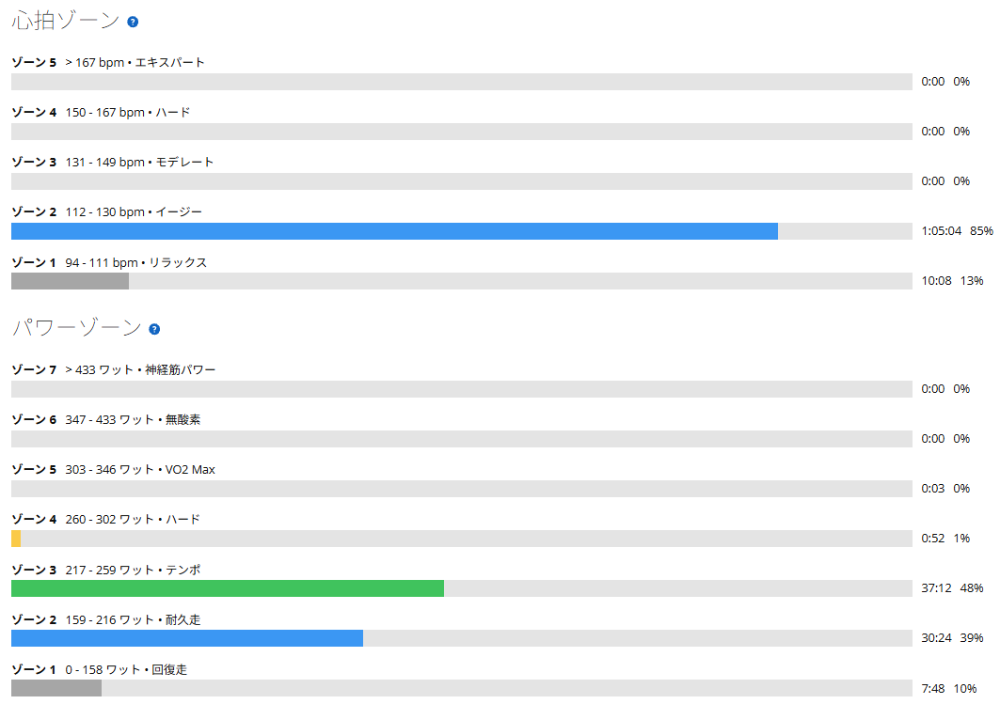

唐沢5分走の翌日、ローラーで220Wを1時間。いつものベース走を淡々と
昨日は唐沢で5分走を5本。TSSは109.2だった。高強度をしっかり入れた翌日なので、今日はローラーでベース走。いつもどおり、220W前後を1時間維持することにした。

220Wは私にとって「いつものベース」
現在のFTPは289Wで、220Wはその約76％にあたる。数字だけ見ると、軽い回復走ではない。Z2を少し超え、Garminのゾーンではテンポの下端にあたる。それでも私にとっては、以前から続けてきたベース走の基準である。
楽々というわけではない。でも、歯を食いしばるほどでもない。今日はそんな強度で、淡々とペダルを回した。
60分間、ほぼ一定の出力で
ウォームアップを10分ほど行った後、メインの60分走へ。結果は平均220W、NP221W。ほとんど出力を乱さずに走ることができた。メインの平均心拍は121bpm、最大129bpm。心拍の推移も大きく暴れることはなかった。
昨日の唐沢では、出力の割に心拍が妙に低く、下りでの回復も早く感じた。今日も心拍は比較的低めだったが、これが身体の変化なのか、計測や環境によるものなのかはまだ分からない。今は結論を急がず、今後の傾向を見ていこうと思う。
ケイデンスは75rpm前後
メインの平均ケイデンスは75rpm。私の場合、ローラーで高いケイデンスのまま220Wを維持するのは意外と難しい。なので、自然と回転数を少し抑えて、じっくり踏み続けるスタイルになる。
回転数だけ見れば低めだが、無理やり重いギアを踏みつぶしているという感覚ではない。一定の出力を安定させるには、今のところこの回し方が合っている。
約36km・NP212W・TSS68
- 全体36.40km / 1時間16分23秒 / 運動量950kJ
- 負荷平均207W / NP212W / IF0.735 / TSS68.3 / FTP設定289W
- 心拍・回転平均118bpm / 最大129bpm / 平均76rpm
- メイン60分 / 220W / NP221W / 心拍平均121bpm・最大129bpm / 75rpm

昨日のTSS109.2と合わせると、2日間で177.5。体感ではそれほどきつくなかったが、TSS68.3は積み上がっている。回復走というより、しっかりしたベース練習だった。
練習データをAIに見せると、昨日が高強度だったこともあり、今日の220Wを「少し高め」と評価された。そこで改めて、今までの練習基準と今日の体感を伝え直した。
AIは少し慎重すぎる
そう、それでいい。もちろん疲労が強い日や身体に違和感がある日は、負荷を落とす判断も必要だ。でも、毎回慎重にしすぎていたら、富士ヒルゴールドに向けた練習がどんどん緩くなってしまう。AIには無理をさせない役割も期待しているけれど、同じくらい「強くなるために必要な練習」を考えてほしい。
地道に、一定の出力を踏み続ける
高強度の翌日でも、いつものベース走を大きな問題なくこなせた。身体に余裕がある日に、こういう地道な積み重ねができるのは悪くない。
一方で、220Wがまったく楽なわけではないことも忘れたくない。余裕を持って続けられる強度と、ちゃんと練習になる強度。そのちょうどいいところを探しながら、少しずつ底上げしていく。富士ヒルゴールドを目指す道のりは、派手な高強度だけではない。今日みたいに、ひたすら一定の出力を踏み続ける時間も、きっと大事な一歩だ。